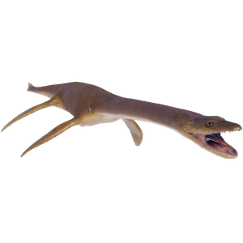

Useful Website
Known for its powerful paddle-like limbs that allow it to swim through water at speed and a flexible, elongated neck that can move quickly to catch fish and other prey, Plesiosaurus is a piscivorous marine reptile that can grow up to 3.5m in length. The name Plesiosaurus means ‘near lizard’, and the genus dates back to the Early Jurassic period, around 200m years ago.
